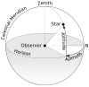

azimuth_angle
operation

Source: Wikipedia
Wikipedia Page (Something wrong with this association? Let us know.)
Wikidata Page (Something wrong with this association? Let us know.)
Occurs in:
- atmosphere_air__azimuth_angle_of_gradient_of_temperature
- atmosphere_air_flowing__azimuth_angle_of_bolus_velocity
- atmosphere_air_flowing__azimuth_angle_of_gradient_of_potential_vorticity
- atmosphere_air_flowing__azimuth_angle_of_gradient_of_pressure
- atmosphere_air_flowing__azimuth_angle_of_momentum
- atmosphere_air_flowing__azimuth_angle_of_velocity
- atmosphere_air_flowing__azimuth_angle_of_vorticity
- river-delta_channel~main_entrance__azimuth_angle_of_velocity
- earth_surface_viewpoint_sun__azimuth_angle
- earth_surface_viewpoint_sun__azimuth_angle
- glacier_ice__azimuth_angle_of_gradient_of_temperature
- glacier_ice_flowing__azimuth_angle_of_gradient_of_static_pressure
- glacier_ice_flowing__azimuth_angle_of_velocity
- land_surface_water_flowing__azimuth_angle_of_velocity
- land_surface_water_flowing__azimuth_angle_of_z_integral_of_velocity
- model_grid_cell_water__azimuth_angle_of_velocity
- projectile_impact__azimuth_angle_of_velocity
- projectile__azimuth_angle_of_initial_velocity
- projectile__azimuth_angle_of_velocity
- projectile_trajectory_origin_wind__azimuth_angle_of_velocity
- sea_shoreline__azimuth_angle_of_normal-vector
- sea_shoreline_breaking-wave__azimuth_angle_of_phase_velocity
- sea_shoreline_water_wave~incoming__azimuth_angle_of_group_velocity
- sea_shoreline_water_wave~incoming__azimuth_angle_of_left_normal_of_phase_velocity
- sea_shoreline_water_wave~incoming__azimuth_angle_of_phase_velocity
- sea_shoreline_deepwater-wave~incoming__azimuth_angle_of_group_velocity
- sea_shoreline_deepwater-wave~incoming__azimuth_angle_of_left_normal_of_phase_velocity
- sea_shoreline_deepwater-wave~incoming__azimuth_angle_of_phase_velocity
- sea_water__azimuth_angle_of_gradient_of_salinity
- sea_water__azimuth_angle_of_gradient_of_temperature
- sea_water_flowing__azimuth_angle_of_bolus_velocity
- sea_water_flowing__azimuth_angle_of_gradient_of_pressure
- sea_water_flowing__azimuth_angle_of_momentum
- sea_water_flowing__azimuth_angle_of_stokes_drift_velocity
- sea_water_flowing__azimuth_angle_of_velocity
- sea_water_flowing__azimuth_angle_of_vorticity
- soil_water_flowing__azimuth_angle_of_darcy_velocity
- model_grid_virtual-north-pole__azimuth_angle